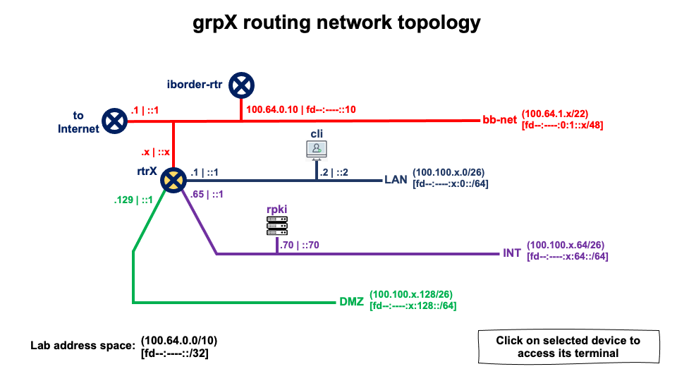

<map name="map">
<!-- #$-:Image map file created by GIMP Image Map plug-in -->
<!-- #$-:GIMP Image Map plug-in by Maurits Rijk -->
<!-- #$-:Please do not edit lines starting with "#$" -->
<!-- #$VERSION:2.3 -->
<!-- #$AUTHOR:Nicolas Antoniello -->
<area shape="circle" coords="246,255,16" href="http://rtrX" />
<area shape="rect" coords="435,198,462,222" href="http://cli" />
<area shape="rect" coords="378,306,408,334" href="http://rpki" />
</map>
